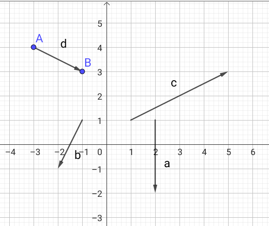
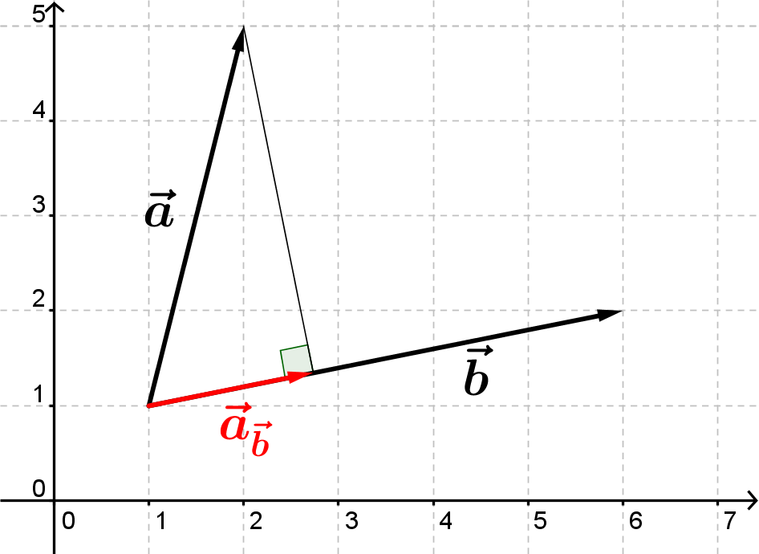
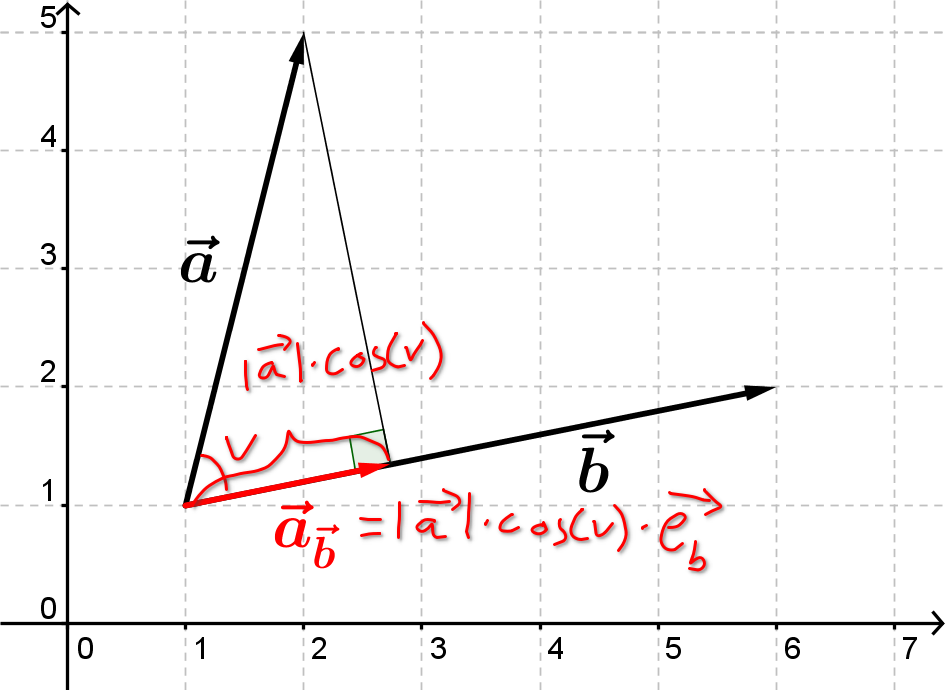
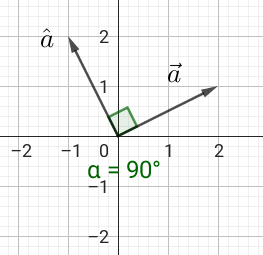
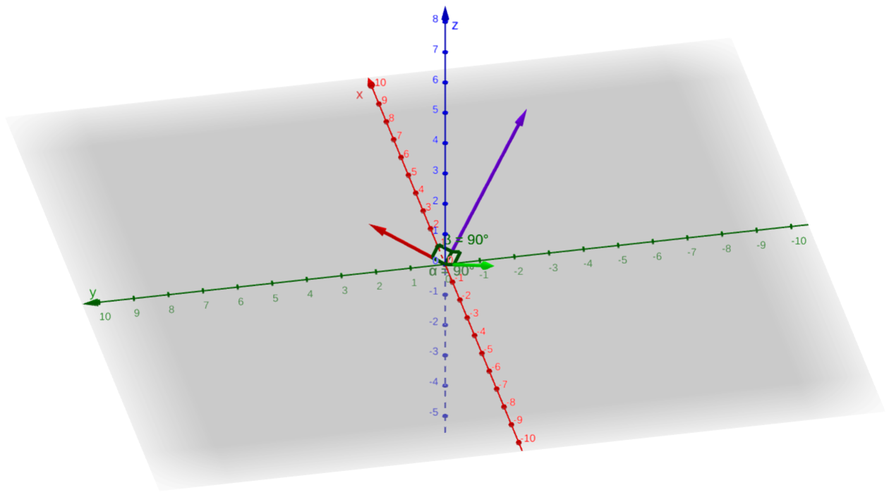
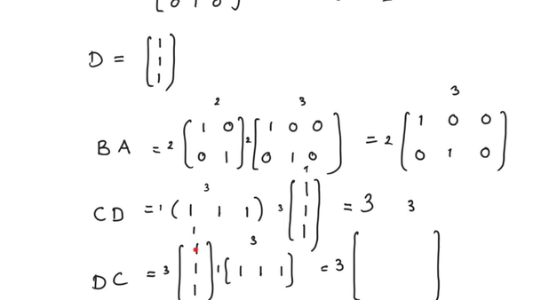
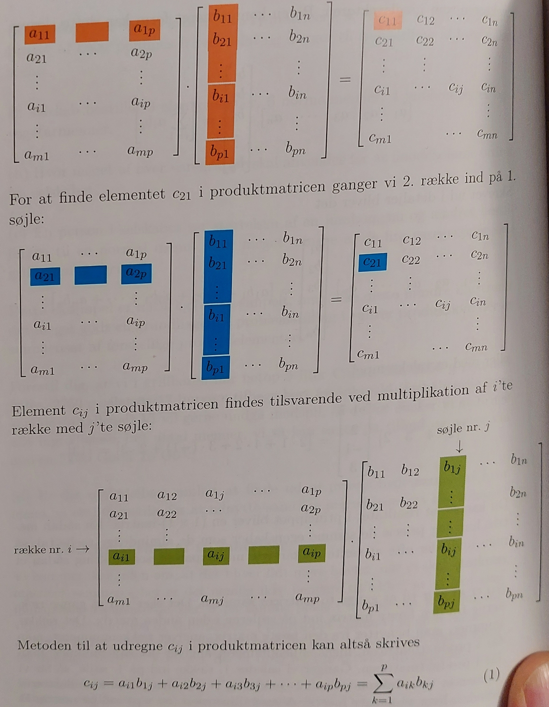

En hurtig men avanceret indføring til vektorer i 3D samt krydsprodukter
SRC - Ladede partikler i magnetfelt
2.x
Vibenshus Gymnasium
I kender allerede…
…lidt til vektorer i 2D.

Så én dimension mere…
…skulle vel ikke være noget problem.
- Aflæs koordinaterne til de 4 vektorer \(\vec{a}\), \(\vec{b}\), \(\vec{c}\) og \(\vec{d}\).
2D vs 3D
2D
3D
- Ja, hvordan søren finder man længden af en vektor i 3 dimensioner?
- Lad os tænke os om!
Simple opgaver
- Her er lidt at lege med omkring vektorer i 3D.
- Der er både forklaringer, opgaver og facitliste på en gang. Det er jo et sandt kinderæg af lækkerhed. :)

En enhedsvektor?
- Ja, hvad kan det mon være?
20 s. med sidemakkeren. - Når nej, det stod jo i dokumentet.
- Det er en vektor med en længde på 1.
- (Og som går i samme retning, som en oprindelig vektor).
- I skal nu bevise \[\overrightarrow{e_a} = \begin{pmatrix} \frac{a_x}{\lvert \vec{a} \rvert} \\ \frac{a_y}{\lvert \vec{a} \rvert} \\ \frac{a_z}{\lvert \vec{a} \rvert} \end{pmatrix} = \frac{1}{\lvert \vec{a} \rvert} \cdot \vec{a} \quad \text{for} \quad \vec{a} = \begin{pmatrix} a_x \\ a_y \\ a_{z} \end{pmatrix}\]
- Hint: Bare beregn længden af enhedsvektoren.
Projek-hva'-for-no'et?
I dokumentet står der:
For vektorerne
\[\vec{a} = \begin{pmatrix} a_x \\ a_y \\ a_z \end{pmatrix} \text{ og } \vec{b} = \begin{pmatrix} b_x \\ b_y \\ b_z \end{pmatrix}\]
kan projektionen af \(\vec{a}\) på \(\vec{b}\) findes på følgende måde:
\[\overrightarrow{a_b} = \frac{\vec{a} \cdot \vec{b}}{\vec{b}\cdot \vec{b}} \cdot \vec{b} =\frac{\vec{a} \cdot \vec{b} }{\lvert \vec{b} \rvert^2} \cdot \vec{b} = \frac{a_x \cdot b_x + a_y \cdot b_y + a_z \cdot b_z}{b_x^2 + b_y^2 + b_z^2} \cdot \begin{pmatrix} b_x \\ b_y \\ b_z \end{pmatrix}\,.\]
Men, hvad skal det nu betyde?
Projektion
Lys med en lygte på både \(\vec{a}\) og \(\vec{b}\) så lyset falder vinkelret ind på \(\vec{b}\). Projektionen af \(\vec{a}\) på \(\vec{b}\) er da skyggen af \(\vec{a}\) på \(\vec{b}\).

Lånt fra webmatematik.
Bevis
Se på figuren, og kom så bare igang.

- Man skal holde tungen lige i munden.
- Vi tager den lige på tavlen en gang til for prins Knud (og alle andre).
Diverse prut lugter produkter
Skalarproduktet
I kender allerede skalarproduktet/prikproduktet for vektorer i 2D.
\[\vec{a}\cdot \vec{b} = a_x\cdot b_x+a_y\cdot b_y\]
I 3D er der ikke så meget nyt under solen. I kan næsten gætte, hvordan det skal se ud.
\[\vec{a} \cdot \vec{b} = a_x\cdot b_x+a_y\cdot b_y + a_z \cdot b_z\]
Lad os se nærmere på det.
Krydsproduktet
Tværvektorer i 2D og 3D
2D
- I 2D kan man danne en vinkelret vektor til en given vektor vha en tværvektor.
\[\vec{a} = \begin{pmatrix} a_x \\ a_y\end{pmatrix} \,,\, \hat{a} = \begin{pmatrix} - a_y \\ a_x\end{pmatrix}\]

3D
- I 3D kan man danne en vektor, som står vinkelret på 2 vektorer vha krydsproduktet.

Opgaver
Indtast følgende vektorer i geogebra 3D. Det gør man ved at skrive f.eks.
a=(1,0,0), altså med små bogstaver.\begin{align*} \vec{i} &= \begin{pmatrix} 1\\0\\0 \end{pmatrix} & \vec{j} &= \begin{pmatrix} 0\\1\\0 \end{pmatrix} & \vec{k} &= \begin{pmatrix} 0\\0\\1 \end{pmatrix} \\ \vec{a} &= \begin{pmatrix} 2\\1\\3 \end{pmatrix} & \vec{b} &= \begin{pmatrix} 2\\1\\2 \end{pmatrix} & \vec{c} &= \begin{pmatrix} -2\\-1\\-2 \end{pmatrix} \end{align*}- Undersøg alle de mulige (eller så mange som muligt) krydsprodukter vha kommandoen
Kryds(<vektor>, <vektor>). Hvad kan I finde af sammenhænge?
Krydsprodukt
Hvis man har givet to vektorer \[\vec{a} = \begin{pmatrix} a_x \\ a_y \\ a_z \end{pmatrix} \text{ og } \vec{b} = \begin{pmatrix} b_x \\ b_y \\ b_z \end{pmatrix}\]
kan man bestemme krydsproduktet på følgende måde:
\[\boxed{\vec{a} \times \vec{b} = \begin{pmatrix} a_x \\a_y\\a_z \end{pmatrix} \times \begin{pmatrix} b_x \\ b_y \\ b_z \end{pmatrix} =\begin{pmatrix} \begin{vmatrix} a_y & b_y \\ a_z & b_z \end{vmatrix} \\ -\begin{vmatrix}a_x & b_x \\ a_z & b_z\end{vmatrix} \\ \begin{vmatrix} a_x & b_x \\ a_y & b_y\end{vmatrix}\end{pmatrix} = \begin{pmatrix} a_y b_z - a_z b_y \\ -a_x b_z + a_z b_x \\ a_x b_y - a_y b_x \end{pmatrix} = \lvert \vec{a} \rvert \cdot \lvert \vec{b} \rvert \cdot \sin (\theta) \cdot \vec{n}}\]
Opgaver
- Bestem de krydsprodukter, I bliver bedt om på følgende side. I kan klikke på billedet for at komme derhen.
- (hvis I opdaterer siden kommer der nye opgaver):
Krydsprodukter i deltaljen
- Lad os se nærmere på krydsproduktet.
- Fremgangsmåden er den samme som for skalarproduktet.
Vektorer, krydsprodukter, determinanter
WTF!
- Men det skal blive værre endnu. :)
- Lad os gå lidt ned i detaljen.
MATRIX-regning
|  |
Vektorer og matricer
- En søjle-vektor skrives op lodret \(\mathbf{a} =\begin{bmatrix} a_1 \\ a_2 \\ a_3 \end{bmatrix}\)
- En række-vektor skrives op vandret \(\mathbf{b} = \begin{bmatrix} b_1 & b_2 & b_3 \end{bmatrix}\)
- En generel matrice er et 2D-objekt med tal i, her med dimensionen \(m\times n\)(m rækker og n søjler): \[\mathbf{A} = \begin{bmatrix} a_{11} & a_{12} & a_{1j} & \dots & a_{1n} \\ a_{21} & a_{22} & \dots & & a_{2n}\\ \vdots & \vdots & & & \vdots \\ a_{i1} & \dots & a_{ij} & \dots & a_{in} \\ \vdots & & & & \vdots \\ a_{m1}& \dots & a_{mj} & \dots & a_{mn}\end{bmatrix}\]
Transponering
- En transponeret matrix fremkommer med at bytte om på rækker og søjler.
- Det samme gælder for vektorer.
Eksempler
\begin{align*} \mathbf{a} &= \begin{bmatrix} 1 \\ 2 \\ 3 \end{bmatrix} & \mathbf{a}^T &= \begin{bmatrix} 1 & 2 & 3 \end{bmatrix}\\ \mathbf{b} &= \begin{bmatrix} 4 & 5 & 6 \end{bmatrix} & \mathbf{b}^T &= \begin{bmatrix} 4 \\ 5 \\ 6 \end{bmatrix} \\ \mathbf{A} &= \begin{bmatrix} 1 & 2 & 3 \\ 4 & 5 & 6 \end{bmatrix} & \mathbf{A}^T &= \begin{bmatrix} 1 & 4 \\ 2 & 5 \\ 3 & 6 \end{bmatrix} \end{align*}
Sum, differens og gange med konstant
- Det er lige så nemt, som man tror.
- Dimensionerne skal bare passe sammen.
Men hvad med produkter?
Det indre produkt af to vektorer
- I et euklidisk vektorrum kan man danne et indre produkt mellem en rækkevektor og en søjlevektor på følgende måde:
- Dette kaldes også for skalarproduktet mellem to vektorer.
Det ydre produkt af to vektorer
- Hvad sker der, hvis man i stedet for at "gange" en rækkevektor med en søjlevektor, "ganger" en søjlevektor med en rækkevektor?
Ja, så får man det ydre produkt.
\begin{align*} \mathbf{a} &= \begin{bmatrix} a_1 \\ \vdots \\ a_n \end{bmatrix} \quad \text{ og } \quad \mathbf{b} = \begin{bmatrix} b_1 \\ \vdots\\ b_n \end{bmatrix} \\ \mathbf{a} \,\mathbf{b}^T &= \begin{bmatrix} a_1 \\ \vdots \\a_n \end{bmatrix} \begin{bmatrix} b_1 & \dots & b_n \end{bmatrix} = \begin{bmatrix} a_1 \cdot b_1 & a_1 \cdot b_2 & \dots & a_1 \cdot b_n \\ a_2 \cdot b_1 & a_2 \cdot b_2 & \dots & a_2 \cdot b_{n} \\ \vdots & \dots & \ddots & \vdots \\ a_n \cdot b_1 & \dots & \dots & a_n \cdot b_n \end{bmatrix} \end{align*}- Sporet af det ydre produkt er lige det indre produkt, og er givet ved \(tr \left(\mathbf{a} \, \mathbf{b}^T \right) = a_1 \cdot b_1 + a_2\cdot b_2 + \dots a_n \cdot b_n\).
- Sporet er altså summen langs diagonalen fra øverste venstre hjørne til nederste højre hjørne.
Matrixprodukt
- Hvis man skal gange 2 matricer sammen, skal de passe sammen i størrelse. Antallet af søjler i den første matrice være lig med antallet af rækker i anden matrice.
- Herefter finder man det indre produkt mellem hver række i første matrice og hver søjle i anden matrice.
- Det må vil hellere lige øve os på. Jeg har brug for 7 frivillige!

Eksempler
- Men hvad med \(\mathbf{B} \, \mathbf{A}\)?
Nu er det jeres tur
- Kan I finde nogle sammenhænge?
Krydsprodukt som matrix-vektorprodukt
- Nu er I i stand til at bestemme krydsproduktet mellem to vektorer som et matrix-vektorprodukt.
- Det ser ud som følger:
- \(\left[ \mathbf{a} \right]_x\) er en antisymmetrisk matrice, som vil sige at \(\left[ \mathbf{a} \right]_x^T = - \left[ \mathbf{a} \right]_x\).
- Prøv det lige en gang! Virker det?
Hvordan husker man matricen?
- Hvordan skal man dog kunne huske, hvordan matricen er opbygget?
- WIP